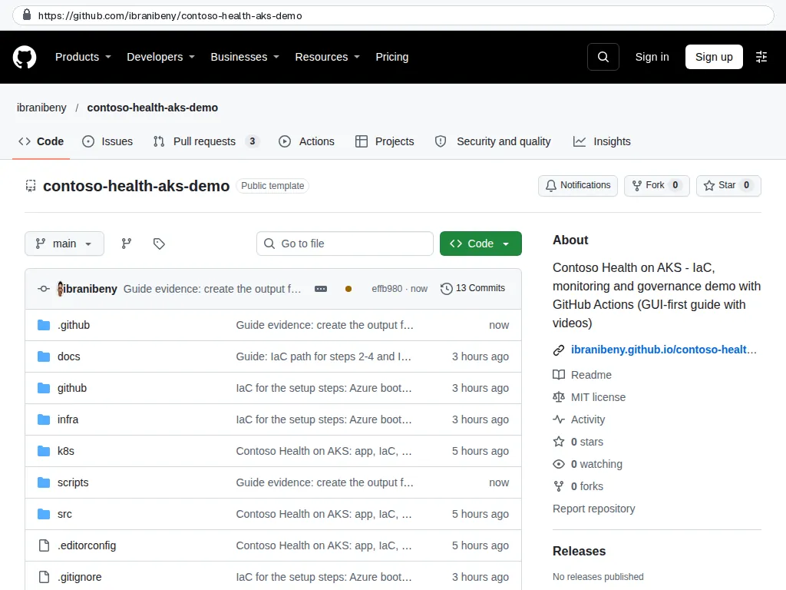
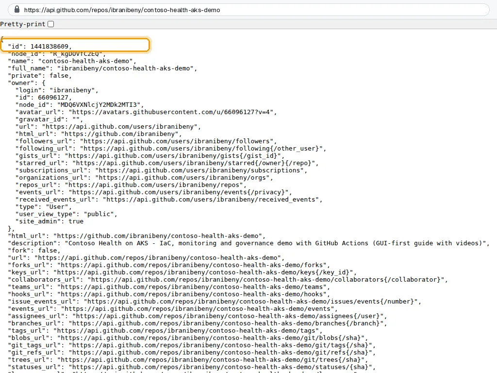
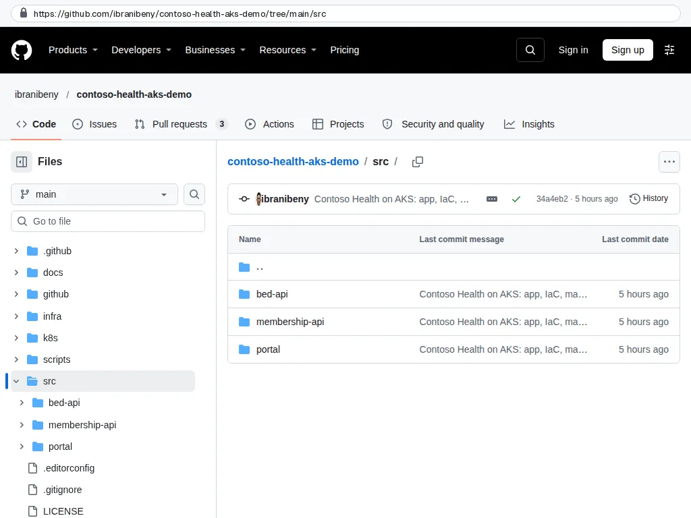
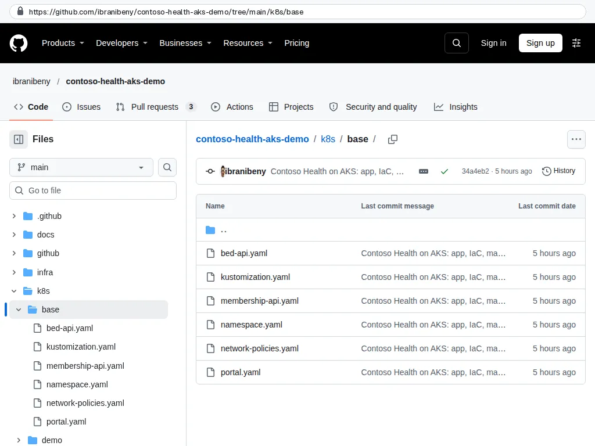
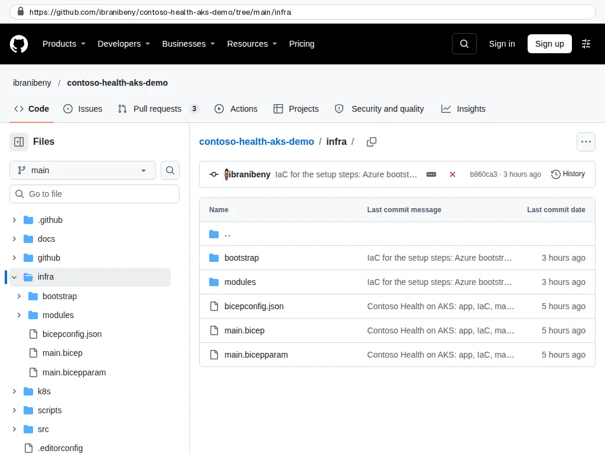
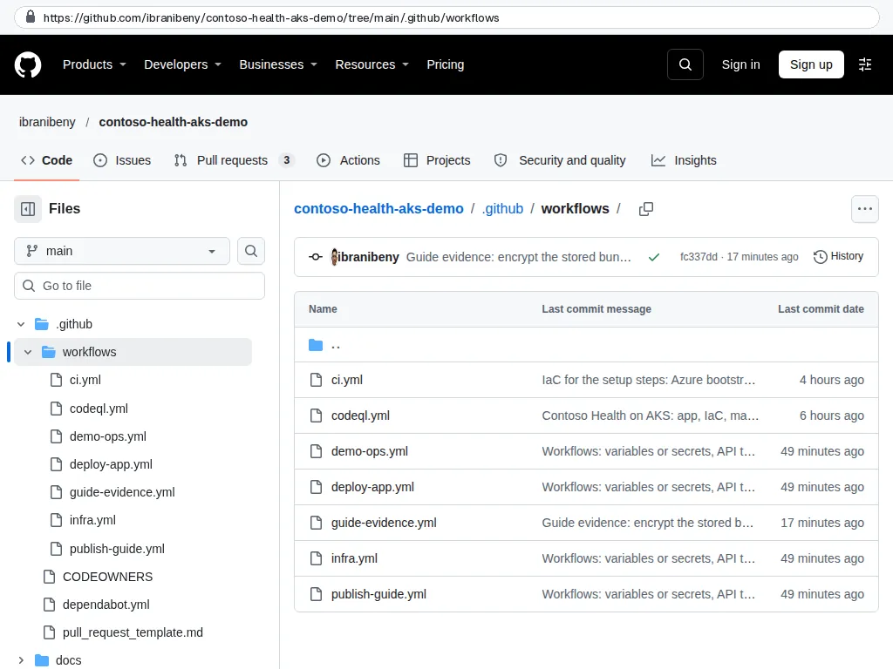
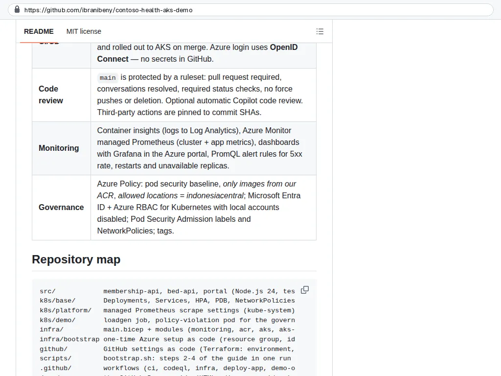
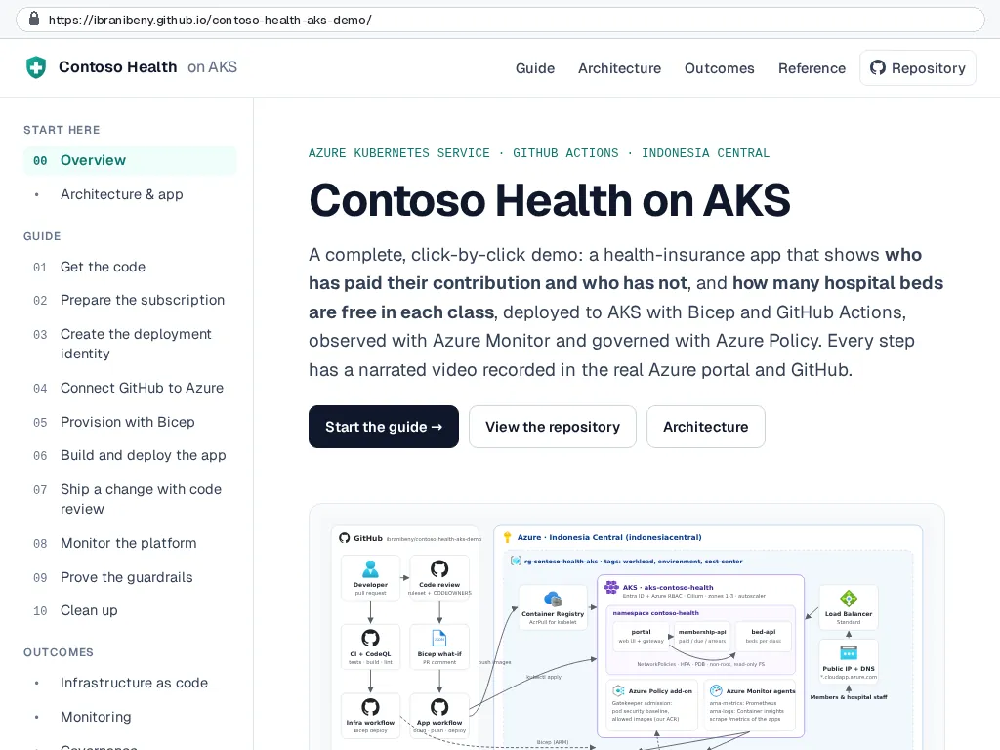

Step 1 of 10
Get the code and take a tour
Everything lives in one GitHub repository: three small Node.js services, Kubernetes manifests, Bicep templates and the GitHub Actions workflows that connect them. Create your own copy from the template, note two IDs, and learn where things are.
Transcript (English)
Step one. Everything in this demo lives in one GitHub repository: the app, the Kubernetes manifests, the Bicep templates, and the workflows that connect them.
This is the template repository. Signed in to GitHub, select Use this template, then Create a new repository, and you have your own copy.
The src folder holds three small Node.js services: the membership A P I, the bed A P I, and the portal.
Under k8s base are the Kubernetes manifests: deployments, services, autoscalers, disruption budgets, and network policies.
The infra folder has the Bicep template and its modules. The bootstrap folder holds the one-time Azure setup, as code.
There are seven workflows, from C I and Code Q L to infrastructure, app delivery, demo scenarios, and the publishing of this guide.
Step three needs two numbers: the repository I D and the owner I D. The GitHub A P I shows both.
The README links back to this guide and summarises what the demo covers.
And this guide itself is published from the same repository, with GitHub Pages.
Transcript (Bahasa Indonesia)
Langkah satu. Semua isi demo ini ada di satu repositori GitHub: aplikasinya, manifest Kubernetes, templat Bicep, dan workflow yang menghubungkan semuanya.
Ini repositori templatnya. Setelah masuk ke GitHub, pilih Use this template, lalu Create a new repository, dan Anda punya salinan sendiri.
Folder src berisi tiga layanan kecil berbasis Node J S: membership A P I, bed A P I, dan portal.
Di k8s base ada manifest Kubernetes: deployment, service, autoscaler, disruption budget, dan network policy.
Folder infra berisi templat Bicep beserta modulnya. Folder bootstrap menyimpan penyiapan Azure satu kali, dalam bentuk kode.
Ada tujuh workflow, mulai dari C I dan Code Q L hingga infrastruktur, delivery aplikasi, skenario demo, dan publikasi panduan ini.
Langkah tiga butuh dua angka: I D repositori dan I D pemilik. Keduanya bisa dilihat lewat A P I GitHub.
README berisi tautan kembali ke panduan ini, dan merangkum cakupan demo.
Dan panduan ini sendiri diterbitkan dari repositori yang sama, dengan GitHub Pages.
What you will do#
- Create your own repository from the template.
- Note the owner ID and repository ID; step 3 needs them.
- Know where the app, the manifests, the Bicep templates and the workflows live.
This step ran fully automated: the GitHub API and the workflows in this repository did the work. The screenshots are public GitHub and app pages captured by the Guide evidence workflow, and the data frames show real output that the pipeline read back from Azure (read-only). The numbered instructions describe the same actions in the portal and GitHub UI.
Create your copy#
Open ibranibeny/contoso-health-aks-demo and select Use this template, then Create a new repository. Pick your account as the owner, keep the name contoso-health-aks-demo and choose Public or Private. Leave Include all branches unticked.
The template repository. Signed in, select Use this template, then Create a new repository, to get your own copy.

GitHub
A template copy is an independent repository with a fresh history and its own repository ID. The federated credentials you create in step 3 trust exactly one repository ID, so every copy gets its own.
Find the owner ID and repository ID#
GitHub identifies every account and repository with a number that never changes, even after a rename. Open the repository in the GitHub REST API in your browser (no sign-in needed for a public repository):
https://api.github.com/repos/<owner>/<repository>In the JSON, id is the repository ID and owner.id is the owner ID. For this repository they are:
{
"id": 1441838609,
"name": "contoso-health-aks-demo",
"owner": { "login": "ibranibeny", "id": 66096127 }
}Your copy has different numbers. Write yours down.
api.github.com/repos/OWNER/REPO: id is the repository ID (1441838609), owner.id the owner ID (66096127). Step 3 needs both.

GitHub
Tour the repository#
The layout keeps application code, platform code and delivery code apart, so each change type triggers only the workflow that owns it.
src/ holds three Node.js 24 services: membership-api, bed-api and the portal. No npm dependencies.

Repository code k8s/base: Deployments, Services, autoscalers, disruption budgets and NetworkPolicies, assembled with Kustomize.

Repository code infra/: main.bicep, its parameters and five modules. infra/bootstrap holds the one-time Azure setup as code.

Repository code Seven workflows: CI, CodeQL, Infrastructure, App, Demo scenarios, Publish guide and Guide evidence.

Repository code The README links this guide and summarises IaC, CI/CD, code review, monitoring and governance.

GitHub This guide is published from the same repository with GitHub Pages.

GitHub
| Path | What it holds | Changed by |
|---|---|---|
src/membership-api | Members, contribution rules, payment status (paid, due by the 10th, in arrears). Node.js 24, no npm dependencies. | App pull requests |
src/bed-api | 22 Contoso hospitals with bed capacity and availability for nine bed classes (VIP, class 1-3, ICU, HCU, NICU, PICU, isolation). | App pull requests |
src/portal | Web UI and API gateway: /api/membership/* and /api/capacity/* are proxied to the two APIs. | App pull requests |
k8s/base | Namespace, Deployments, Services, HPA, PodDisruptionBudgets, NetworkPolicies (Kustomize). | App pull requests |
k8s/platform | Cluster-level config: the managed Prometheus settings ConfigMap. | Platform pull requests |
k8s/demo | Demo-only manifests: a load generator and a deliberately non-compliant pod. | Demo scenarios workflow |
infra/ | main.bicep, main.bicepparam and five modules: monitoring, registry, AKS, AKS monitoring, policy. | Infrastructure pull requests |
.github/workflows | CI, CodeQL, Infrastructure (Bicep), App (build & deploy to AKS), Demo scenarios. | Platform pull requests |
.github/CODEOWNERS | Ownership for review routing. | Repository admins |
Check your work#
- You own a copy of the repository (or you are working in
ibranibeny/contoso-health-aks-demo). - You have the owner ID and the repository ID.
- The Actions tab shows the CI and CodeQL workflows. Runs that need Azure end with the notice Azure is not connected; that is expected until step 4.
How it works#
Why three services? Two small APIs behind a gateway are enough to show real traffic between pods, NetworkPolicies, per-service metrics and a partial outage (one API failing while the other stays healthy) without distracting application complexity.
Why no npm dependencies? The images build in seconds, there is nothing for Dependabot to chase in the demo, and the supply chain story stays simple: base image node:24-alpine, non-root user, read-only root file system.
Synthetic data. 360 members and 22 hospitals are generated deterministically at start-up. The contribution rules follow a typical national health-insurance scheme: classes 1, 2 and 3 cost IDR 150,000, 100,000 and 42,000 per month, wage earners pay 5% of salary (capped at IDR 12 million), contributions are due on the 10th, and coverage is inactive while a member is in arrears.